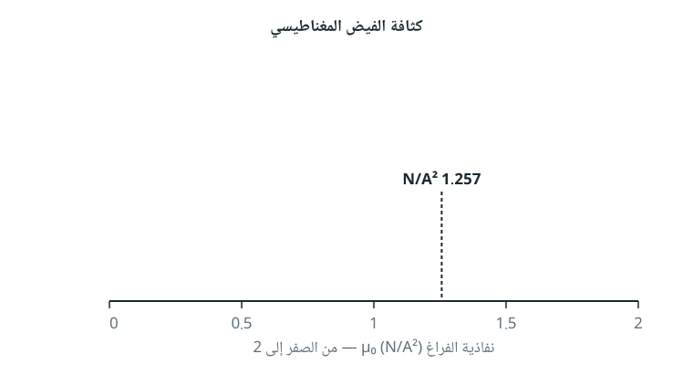

كثافة الفيض المغناطيسي
Magnetic flux density
كثافة الفيض المغناطيسي B هي القوة المؤثرة على وحدة الشحنة المتحركة بوحدة السرعة، ورمزها B ووحدتها تسلا، وهي التي تحدد الفيض المغناطيسي عبر مساحة ما.
كثافة الفيض المغناطيسي B، وتُسمّى أيضاً المجال المغناطيسي، هي الكمية المتجهة التي تحدد القوة المغناطيسية على شحنة متحركة: F = qv×B. ووحدتها النظامية التسلا (T)، وتساوي نيوتن لكل أمبير متر (N/(A·m)). والفيض المغناطيسي Φ عبر سطح هو تكامل B على المساحة: Φ = ∫B·dA، ووحدته الوبر (Wb) = T·m². مثال: سلك مستقيم يحمل 10.0 A يولّد على مسافة 0.050 m مجالاً B = μ₀I/(2πr) = 4π×10⁻⁷ × 10.0/(2π × 0.050) = 4.00×10⁻⁵ T = 40.0 μT، وهو قريب من المجال المغناطيسي الأرضي.
كيف تعمل الظاهرة؟
المجال المغناطيسي ينشأ من شحنات متحركة، أي من تيارات. في السلك، تتحرك الإلكترونات فتنتج مجالاً دائرياً حوله، واتجاهه يُحدَّد بقاعدة اليد اليمنى. والقوة المغناطيسية على شحنة متحركة لا تعمل إلا إذا كانت الشحنة في حركة وفي اتجاه غير موازٍ للمجال: F = qv×B، وهي عمودية على كل من السرعة والمجال، فلا تبذل شغلاً ولا تغيّر مقدار السرعة بل اتجاهها فقط. هذا هو أصل الحركة الدائرية للشحنات في المجالات المغناطيسية، ومنه عمل مطياف الكتلة ومعجلات الجسيمات. ولأن B ناتج عن تيارات، فإن أي تغيّر في التيار يغيّر B، وهو أساس المحوّلات والمحركات.
العلاقة بالأرقام
F = qv×B، ومقدارها F = qvB sinθ. ووحدتها T = N/(A·m) = kg/(A·s²). وللسلك المستقيم B = μ₀I/(2πr). وللملف اللولبي B = μ₀nI حيث n عدد اللفات لكل متر. وللفيض Φ = BA cosθ بوحدة Wb. وقانون فاراداي: ε = −dΦ/dt. مثال عددي: I = 10.0 A، r = 0.050 m → B = 4.00×10⁻⁵ T؛ وملف n = 1000 لفة/m وI = 10.0 A → B = 1.26×10⁻² T.
مفاهيم متقاربة
يُفرَّق بين B وH بدقة: B كثافة الفيض وتُقاس بالتسلا وتعتمد على الوسط المادي، وH شدة المجال وتُقاس بالأمبير لكل متر وتعتمد على التيار المصدر وحده. في الفراغ B = μ₀H، وفي مادة مغناطيسية B = μ₀(H + M) حيث M المغنطة. ويُفرَّق بين B والفيض Φ: الفيض حاصل ضرب B في المساحة العمودية، فملف صغير في مجال قوي قد يحمل فيضاً أقل من ملف كبير في مجال ضعيف. ويُفرَّق أخيراً بين المجال المغناطيسي والمجال الكهربائي: الأول لا يؤثر على الشحنات الساكنة، والثاني يؤثر عليها.
حدود التطبيق
المجال المغناطيسي الساكن لا يؤثر على الشحنات الساكنة، ولا يبذل شغلاً على شحنة متحركة لأن القوة عمودية على الإزاحة. وفي المواد المغناطيسية الحديدية لا تكفي μ₀ بل يلزم منحنى التمغنط لأن B دالة غير خطية في H وله تخلفية. وعند الحقول العالية جداً أو الترددات العالية تصبح النفاذية معقدة وتردديّة. وأخيراً لا يوجد قطب مغناطيسي منفرد: خطوط B مغلقة دائماً، وهذا ما يعبّر عنه قانون غاوس للمغناطيسية ∇·B = 0، وهو ما يمنع وجود «شحنة مغناطيسية» معزولة في الفيزياء الكلاسيكية.

| الكمية | القيمة | المصدر |
|---|---|---|
| نفاذية الفراغ μ₀ | 1.256 637 061 27×10⁻⁶ N/A² | [1] |
| المجال على 0.050 m من سلك يحمل 10.0 A | 4.00×10⁻⁵ T | [1] |
المصادر
- 1 CODATA Value: vacuum magnetic permeability — NIST — CODATA 2022 recommended values (2024). physics.nist.gov/cgi-bin/cuu/Value?mu0 · اطُّلع عليه 2026-11-21
- 2 CODATA Value: speed of light in vacuum — NIST — CODATA 2022 recommended values (2024). physics.nist.gov/cgi-bin/cuu/Value?c · اطُّلع عليه 2026-11-21
- 3 CODATA Value: elementary charge — NIST — CODATA 2022 recommended values (2024). physics.nist.gov/cgi-bin/cuu/Value?e · اطُّلع عليه 2026-11-21
استشهد بهذا المصطلح
الصيغتان مبنيتان من بيانات الصفحة نفسها: العنوان والتاريخ ورابط النسخة المنشورة.
كثافة الفيض المغناطيسي — Magnetic flux density. (2026). ديوان المعرفة — انفراد. https://infiradev.com/diwan/terms/term-magnetic-flux-density.html
@misc{term-magnetic-flux-density2026,
title = {كثافة الفيض المغناطيسي},
titleaddon = {Magnetic flux density},
howpublished = {{ديوان المعرفة — انفراد} — مرجع علمي عربي},
year = {2026},
url = {https://infiradev.com/diwan/terms/term-magnetic-flux-density.html},
urldate = {2026-11-26},
note = {مراجعة علمية: hermes (مراجعة معتمدة 2026-11-26)}
}
راجعه: hermes (مراجعة معتمدة 2026-11-26) · 2026-11-26 · آخر تحديث 2026-11-21